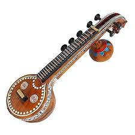
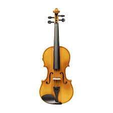
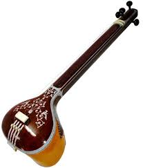
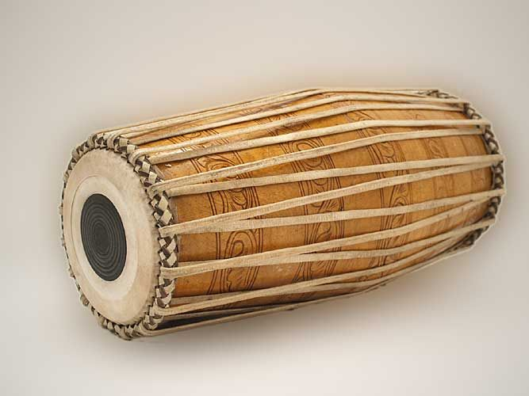
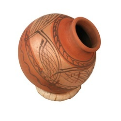

Carnatic Classical Music
Carnatic music is a classical music tradition from South India, known for its rich melodic and rhythmic complexity. It is one of the two major classical music systems in India (the other is Hindustani music of the North).
Key features of Carnatic music
1. Raga
- A raga is a set of notes and rules that define how melodies are created (melody framework)
- Each raga has its own mood, color, and emotional expression
- Uses 72 Melakarta ragas as parent scales
2. Tala
- Rhythmic cycle system based on mathematical structure
- Common talas include Adi, Rupaka, and Khanda Chapu
- Improvisation happens within rhythmic rules
Themes
Most lyrics are devotional, often dedicated to Hindu deities, but also include philosophical themes.
Compositions
- Kriti / Keerthana (main structured song form)
- Varnam (foundational practice piece)
- Alapana, Neraval, Kalpana Swara (improvisation styles)
- Tillana, Padam, Javali (rhythmic and lyrical forms)
Improvisation
- Raga Alapana - free melodic exploration
- Tanam - rhythmic melodic improvisation
- Pallavi - central improvisational performance section
Instruments

Veena

Flute

Violin

Tanpura

Mridangam

Ghatam
Notable Artists
| LIST OF FAMOUS ARTISTS IN CARNATIC CLASSICAL MUSIC | ||
|---|---|---|
| SKILL AREA | NAME | YEARS ACTIVE |
| VOCALISTS | M. S. Subbulakshmi | 1916-2004 |
| M. Balamuralikrishna | 1930-2016 | |
| COMPOSERS | Syama Sastri | 1762-1827 |
| Tyagaraja | 1767-1847 | |
| Muthuswami Dikshitar | 1776-1835 | |
| INSTRUMENTALISTS | Lalgudi Jayaraman (violin) | 1913-2013 |